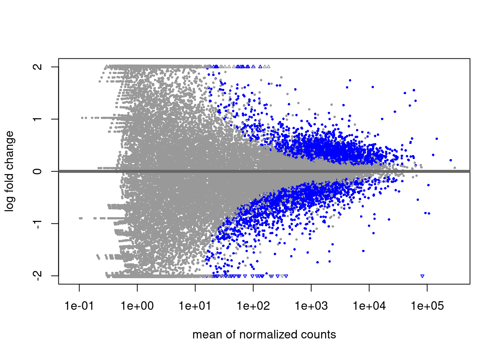
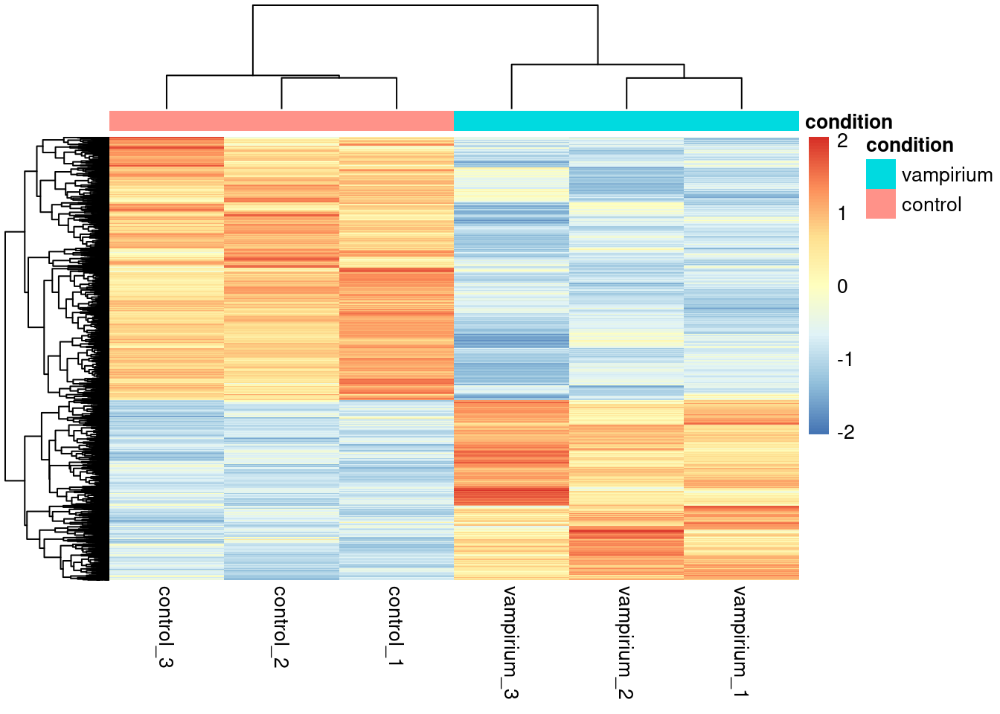

Code
# DO NOT RUN
res_tableCont <- results(dds, contrast=contrast_cont, alpha = 0.05)
head(res_tableCont)Last updated: {{ git_revision_date_localized }}
!!! note “Section Overview”
🕰 **Time Estimation:** 75 minutes
💬 **Learning Objectives:**
1. Explain log fold change shrinkage
2. Setup results data for application of visualization techniques
3. Describe different data visualization useful for exploring results from a DGE analysis
4. Create a volcano plot and MA plot to evaluate relationship among DGE statistics
5. Create a heatmap to illustrate expression changes of differentially expressed genesIn the previous lessons, we learned about how to generate a table with Differentially Expressed genes.
# DO NOT RUN
res_tableCont <- results(dds, contrast=contrast_cont, alpha = 0.05)
head(res_tableCont)The problem with these fold change estimates is that they are not entirely accurate as they do not account for the large dispersion we observe with low read counts. To address this, the log2 fold changes need to be adjusted.
To generate more accurate log2 fold change (LFC) estimates, DESeq2 allows for the shrinkage of the LFC estimates toward zero when the information for a gene is low, which could include:
LFC shrinkage uses information from all genes to generate more accurate estimates. Specifically, the distribution of LFC estimates for all genes is used (as a prior) to shrink the LFC estimates of genes with little information or high dispersion toward more likely (lower) LFC estimates.

Illustration taken from the DESeq2 paper.
In the figure above, we have an example using two genes: green gene and purple gene. For each gene the expression values are plotted for each sample in the two different mouse strains (C57BL/6J and DBA/2J). Both genes have the same mean values for the two sample groups, but the green gene has little within-group variation while the purple gene has high levels of variation. For the green gene with low within-group variation, the unshrunken LFC estimate (vertex of the green solid line) is very similar to the shrunken LFC estimate (vertex of the green dotted line). However, LFC estimates for the purple gene are quite different due to the high dispersion. So even though two genes can have similar normalized count values, they can have differing degrees of LFC shrinkage. Notice the LFC estimates are shrunken toward the prior (black solid line).
Shrinking the log2 fold changes will not change the total number of genes that are identified as significantly differentially expressed. The shrinkage of fold change is to help with downstream assessment of results. For example, if you wanted to subset your significant genes based on fold change for further evaluation, you may want to use shrunken values. Additionally, for functional analysis tools such as GSEA which require fold change values as input you would want to provide shrunken values.
To generate the shrunken log2 fold change estimates, you have to run an additional step on your results object (that we will create below) with the function lfcShrink().
# Save the unshrunken results to compare
res_tableCont_unshrunken <- res_tableCont
# Apply fold change shrinkage
res_tableCont <- lfcShrink(dds, coef="condition_control_vs_vampirium", type="apeglm")Depending on the version of DESeq2 you are using the default method for shrinkage estimation will differ. The defaults can be changed by adding the argument type in the lfcShrink() function as we have above. For most recent versions of DESeq2, type="normal" is the default and was the only method in earlier versions. It has been shown that in most situations there are alternative methods that have less bias than the ‘normal’ method, and therefore we chose to use apeglm.
??? info “More information on shrinkage”
The DESeq2 vignette has an [Extended section on shrinkage estimators](http://bioconductor.org/packages/devel/bioc/vignettes/DESeq2/inst/doc/DESeq2.html#extended-section-on-shrinkage-estimators) that is quite useful.!!! note “contrast vs coef”
When using the shrinkage method, rather than using the `contrast` argument you will be required to specify `coef`. Using contrast forms an expanded model matrix, treating all factor levels equally, and averages over all distances between all pairs of factor levels to estimate the prior. Using coef, means looking only at that column of the model matrix (so usually that would be one level against the reference level) and estimates the prior for that coefficient from the distribution of those MLE of coefficients. When using coef, the shrinkage depends on which level is chosen as reference.!!! note “How do I know what to value to provide to the coef argument?”
The value you provide here needs to match identically to what is stored in the column header of the coefficients table. To see what values you have to work with you can use `resultsNames(dds)`.When we are working with large amounts of data it can be useful to display that information graphically. During this lesson, we will get you started with some basic and more advanced plots commonly used when exploring differential gene expression data, however, many of these plots can be helpful in visualizing other types of data as well.
We will be working with three different data objects we have already created in earlier lessons:
metanormalized_countsres_tableCont_tb and res_tableGar_tbFirst, we already have a metadata tibble.
meta %>% head()Next, let’s bring in the normalized_counts object with our gene names.
# DESeq2 creates a matrix when you use the counts() function
# First convert normalized_counts to a data frame and transfer the row names to a new column called "gene"
normalized_counts <- counts(dds, normalized=T) %>%
data.frame() %>%
rownames_to_column(var="gene") A plot that can be useful to exploring our results is the MA plot. The MA plot shows the mean of the normalized counts versus the log2 fold changes for all genes tested. The genes that are significantly DE are colored to be easily identified (adjusted p-value < 0.01 by default). This is also a great way to illustrate the effect of LFC shrinkage. The DESeq2 package offers a simple function to generate an MA plot.
Let’s start with the unshrunken results:
# MA plot using unshrunken fold changes
plotMA(res_tableCont_unshrunken, ylim=c(-2,2))And now the shrunken results:
# MA plot using shrunken fold changes
plotMA(res_tableCont, ylim=c(-2,2))On the left you have the unshrunken fold change values plotted and you can see the abundance of scatter for the lowly expressed genes. That is, many of these genes exhibit very high fold changes. After shrinkage, we see the fold changes are much smaller estimates.


In addition to the comparison described above, this plot allows us to evaluate the magnitude of fold changes and how they are distributed relative to mean expression. Generally, we would expect to see significant genes across the full range of expression levels.
!!! question “Exercise 1”
Why are there genes with high mean and big log2 fold changes, but are not statistically significant?"??? question “Solution to Exercise 1”
Because their expression values are very dispersed, and so their p-value will be very high.One way to visualize results would be to simply plot the expression data for a handful of genes. We could do that by picking out specific genes of interest or selecting a range of genes.
Using DESeq2 plotCounts() to plot expression of a single gene
To pick out a specific gene of interest to plot, for example TSPAN7 (ID ENSG00000156298), we can use the plotCounts() from DESeq2. plotCounts() requires that the gene specified matches the original input to DESeq2.
# Plot expression for single gene
plotCounts(dds, gene="ENSG00000156298", intgroup="condition") 
!!! info
This DESeq2 function only allows for plotting the counts of a single gene at a time, and is not flexible regarding the appearance.Using ggplot2 to plot expression of a single gene
If you wish to change the appearance of this plot, we can save the output of plotCounts() to a variable specifying the returnData=TRUE argument, then use ggplot():
# Save plotcounts to a data frame object
d <- plotCounts(dds, gene="ENSG00000156298", intgroup="condition", returnData=TRUE)
# What is the data output of plotCounts()?
d %>% head()# Plot the MOV10 normalized counts, using the samples (rownames(d) as labels)
ggplot(d, aes(x = condition, y = count, color = condition)) +
geom_point(position=position_jitter(w = 0.1,h = 0)) +
geom_text_repel(aes(label = rownames(d))) +
theme_bw() +
ggtitle("TSPAN7") +
theme(plot.title = element_text(hjust = 0.5))!!! note
Note that in the plot below (code above), we are using `geom_text_repel()` from the `ggrepel` package to label our individual points on the plot.
Create a translator from gene names to gene IDs
While gene IDs are unique and traceable, it is hard for us humans to memorize a bunch of numbers. Let’s try to make a translator function that will give you possible gene IDs for a gene name. Then you can use this table to select one of the possible gene_IDs.
The function will take as input a vector of gene names of interest, the tx2gene dataframe and the dds object that you analyzed:
lookup <- function(gene_name, tx2gene, dds){
hits <- tx2gene %>% select(gene_symbol, gene_ID) %>% distinct() %>%
filter(gene_symbol %in% gene_name & gene_ID %in% rownames(dds))
return(hits)
}
lookup(gene_name = "TSPAN7", tx2gene = tx2gene, dds = dds)On the other hand, we can add the information from our tx2gene table, since it has the gene name!
tx2geneHowever, we see that the table has many duplicates per gene, due to the fact that a gene may have several transcripts IDs associated to it. Since our results table has gene IDs, it is important to remove transcript information and remove duplicated rows before merging the information.
We remove the transcript ID column and duplicated rows from the tx2gene table using tidyverse syntax. We merge the tables using the merge function, which has many options for merging. Since our tables have different column names for the gene ID variable, we provide them with the by.x and by.y arguments. We also want to keep all of our results, so we use the argument all.x as well.
res_tableCont_tb <- merge(res_tableCont_tb, tx2gene %>% select(-transcript_ID) %>% distinct(),
by.x = "gene", by.y = "gene_ID", all.x = T)
res_tableCont_tbIn addition to plotting subsets, we could also extract the normalized values of all the significant genes and plot a heatmap of their expression using pheatmap().
# Extract normalized expression for significant genes from the vampirium and control samples
# also get gene name
norm_Contsig <- normalized_counts %>% select(gene, starts_with("control"), starts_with("vampirium"))
dplyr::filter(gene %in% sigCont$gene) Now let’s draw the heatmap using pheatmap:
# Run pheatmap using the metadata data frame for the annotation
pheatmap(norm_Contsig %>% column_to_rownames("gene"),
cluster_rows = T,
show_rownames = F,
annotation = meta %>% column_to_rownames(var = "sample") %>% select("condition"),
border_color = NA,
fontsize = 10,
scale = "row",
fontsize_row = 10,
height = 20)
!!! note
There are several additional arguments we have included in the function for aesthetics. One important one is `scale="row"`, in which Z-scores are plotted, rather than the actual normalized count value.
Z-scores are computed on a gene-by-gene basis by subtracting the mean and then dividing by the standard deviation. The Z-scores are computed **after the clustering**, so that it only affects the graphical aesthetics and the color visualization is improved.The above plot would be great to look at the expression levels of a good number of genes, but for more of a global view there are other plots we can draw. A commonly used one is a volcano plot; in which you have the log transformed adjusted p-values plotted on the y-axis and log2 fold change values on the x-axis.
To generate a volcano plot, we first need to have a column in our results data indicating whether or not the gene is considered differentially expressed based on p-adjusted values and we will include a log2fold change here.
To generate a volcano plot, we first need to have a column in our results data indicating whether or not the gene is considered differentially expressed based on p-adjusted values and we will include a log2fold change here.
## Obtain logical vector where TRUE values denote padj values < 0.05 and fold change > 1.5 in either direction
res_tableCont_tb <- res_tableCont_tb %>%
mutate(threshold_Cont = padj < 0.05 & abs(log2FoldChange) >= 0.58)Now we can start plotting. The geom_point object is most applicable, as this is essentially a scatter plot:
## Volcano plot
ggplot(res_tableCont_tb) +
geom_point(aes(x = log2FoldChange, y = -log10(padj), colour = threshold_Cont)) +
ggtitle("Control vs Vampirium") +
xlab("log2 fold change") +
ylab("-log10 adjusted p-value") +
#scale_y_continuous(limits = c(0,50)) +
theme(legend.position = "none",
plot.title = element_text(size = rel(1.5), hjust = 0.5),
axis.title = element_text(size = rel(1.25))) 
Checking the top DE genes
This is a great way to get an overall picture of what is going on, but what if we also wanted to know where the top 10 genes (lowest padj) in our DE list are located on this plot? We could label those dots with the gene name on the Volcano plot using geom_text_repel().
First, we need to order the res_tableCont tibble by padj, and add an additional column to it, to include on those gene names we want to use to label the plot.
## Create an empty column to indicate which genes to label
res_tableCont_tb <- res_tableCont_tb %>% mutate(genelabels = "")
## Sort by padj values
res_tableCont_tb <- res_tableCont_tb %>% arrange(padj)
## Populate the gene labels column with contents of the gene symbols column for the first 10 rows, i.e. the top 10 most significantly expressed genes
res_tableCont_tb$genelabels[1:10] <- as.character(res_tableCont_tb$gene_symbol[1:10])
head(res_tableCont_tb)Next, we plot it as before with an additional layer for geom_text_repel() wherein we can specify the column of gene labels we just created.
ggplot(res_tableCont_tb, aes(x = log2FoldChange, y = -log10(padj))) +
geom_point(aes(colour = threshold_Cont)) +
geom_text_repel(aes(label = genelabels)) +
ggtitle("Control vs Vampirium") +
xlab("log2 fold change") +
ylab("-log10 adjusted p-value") +
theme(legend.position = "none",
plot.title = element_text(size = rel(1.5), hjust = 0.5),
axis.title = element_text(size = rel(1.25))) 
If you use the DESeq2 tool for differential expression analysis, the package ‘DEGreport’ can use the DESeq2 results output to make the top20 genes and the volcano plots generated above by writing a few lines of simple code. While you can customize the plots above, you may be interested in using the easier code. Below are examples of the code to create these plots:*
DEGreport::degPlot(dds = dds, res = res, n = 20, xs = "type", group = "condition") # dds object is output from DESeq2
DEGreport::degVolcano(
data.frame(res[,c("log2fold change","padj")]), # table - 2 columns
plot_text = data.frame(res[1:10,c("log2fold change","padj","id")])) # table to add names
# Available in the newer version for R 3.4
DEGreport::degPlotWide(dds = dds, genes = row.names(res)[1:5], group = "condition")!!! question “Exercise 2”
Create visualizations of the results from your DEA between Garlicum samples and Vampirium samples.??? question “Solution to Exercise 2”
Our Garlicum results are saved in this table. However, we will want to use the LFC shrunken values
::: {.cell layout-align="center"}
```{.r .cell-code}
# Normal results
res_tableGar_unshrunken <- res_tableGar
# Shrunken values
res_tableGar <- lfcShrink(dds, coef="condition_garlicum_vs_vampirium", type="apeglm")
```
:::
We can plot a MAplot:
::: {.cell layout-align="center"}
```{.r .cell-code}
plotMA(res_tableGar, ylim=c(-2,2))
```
:::
And continue with a volcano plot and a heatmap. But first, let's merge our results with with our tx2gene table:
::: {.cell layout-align="center"}
```{.r .cell-code}
res_tableGar_tb <- merge(res_tableGar_tb, tx2gene %>% select(-transcript_ID) %>% distinct(),
by.x = "gene", by.y = "gene_ID", all.x = T)
res_tableGar_tb
```
:::
Volcano plot with top 10 genes:
::: {.cell layout-align="center"}
```{.r .cell-code}
## Create an empty column to indicate which genes to label
res_tableGar_tb <- res_tableGar_tb %>% mutate(genelabels = "")
## Sort by padj values
res_tableGar_tb <- res_tableGar_tb %>% arrange(padj)
## Populate the gene labels column with contents of the gene symbols column for the first 10 rows, i.e. the top 10 most significantly expressed genes
res_tableGar_tb$genelabels[1:10] <- as.character(res_tableGar_tb$gene_symbol[1:10])
head(res_tableGar_tb)
```
:::
::: {.cell layout-align="center"}
```{.r .cell-code}
ggplot(res_tableGar_tb, aes(x = log2FoldChange, y = -log10(padj))) +
geom_point(aes(colour = threshold_Cont)) +
geom_text_repel(aes(label = genelabels)) +
ggtitle("Garlicum vs Vampirium") +
xlab("log2 fold change") +
ylab("-log10 adjusted p-value") +
theme(legend.position = "none",
plot.title = element_text(size = rel(1.5), hjust = 0.5),
axis.title = element_text(size = rel(1.25)))
```
:::
Heatmap of DE genes for Vampirium vs Garlicum:
::: {.cell layout-align="center"}
```{.r .cell-code}
# Extract normalized expression for significant genes from the vampirium and garlicum samples
# also get gene name
norm_Garsig <- normalized_counts %>% select(gene, starts_with("garlicum"), starts_with("vampirium"))
dplyr::filter(gene %in% sigGar$gene)
```
:::
Now let's draw the heatmap using `pheatmap`:
::: {.cell layout-align="center"}
```{.r .cell-code}
# Run pheatmap using the metadata data frame for the annotation
pheatmap(norm_Garsig %>% column_to_rownames("gene"),
cluster_rows = T,
show_rownames = F,
annotation = meta %>% column_to_rownames(var = "sample") %>% select("condition"),
border_color = NA,
fontsize = 10,
scale = "row",
fontsize_row = 10,
height = 20)
```
:::This lesson was originally developed by members of the teaching team (Mary Piper, Meeta Mistry, Radhika Khetani) at the Harvard Chan Bioinformatics Core (HBC).
Materials and hands-on activities were adapted from RNA-seq workflow on the Bioconductor website